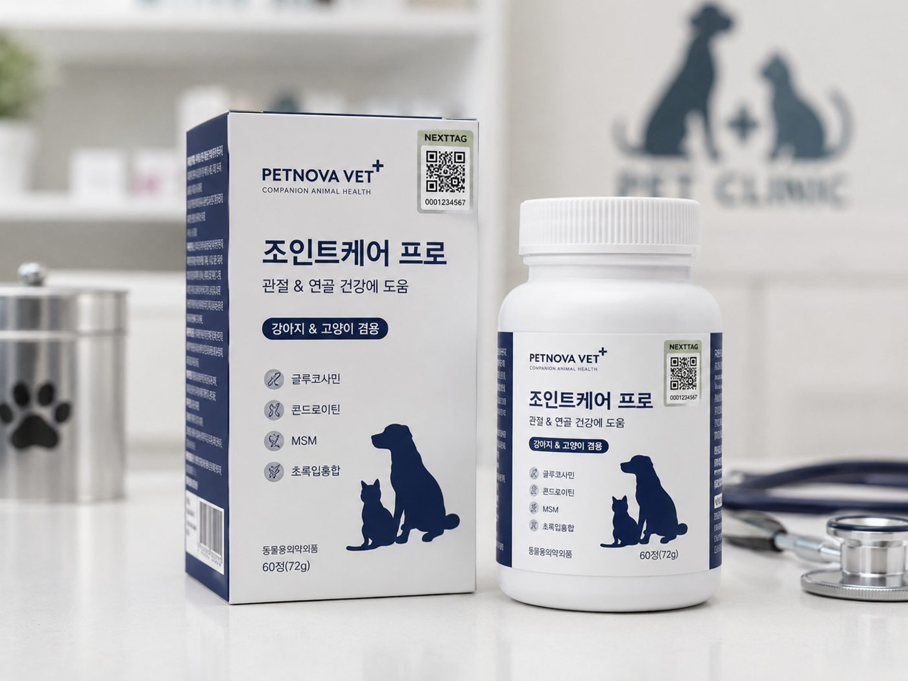

정품이 새어나가는 경로를, 데이터로 되짚습니다.
불법 온라인 거래 적발이 3년 만에 약 26배 늘었습니다.
정품 구매 후 역유통으로 비인가 채널에 유입됩니다.
권역·채널 이탈이 정식 유통 가격을 무너뜨립니다.
유통 추적·소명 요건에 대응해야 합니다.
오픈마켓에서 적발한 제품의 QR을 한 번 스캔하면 출고 거래처·권역·LOT를 즉시 특정하고 반복 유출처를 식별합니다.
출고 권역·채널과 실제 스캔을 대조해 비인가 채널·역유통을 실시간 판정하고 가격 질서를 지킵니다.
입출고·스캔·판정 이력을 불변 원장에 기록해 규제 소명 자료로 즉시 제출합니다. 국내 대형 물류사 등 무중단 API 연동 사례.
시리얼 생성·부착, 출고 데이터 바인딩.
물류 검수, 권역·채널 이동 추적.
출고–시장 대조, 유출원 특정.
이력 기록, 약사법 규제 대응.
실제 제품에 부착된 난수 QR — 소비자는 스캔 한 번으로 정품을 확인하고, 브랜드는 출고 이후를 관제합니다.
